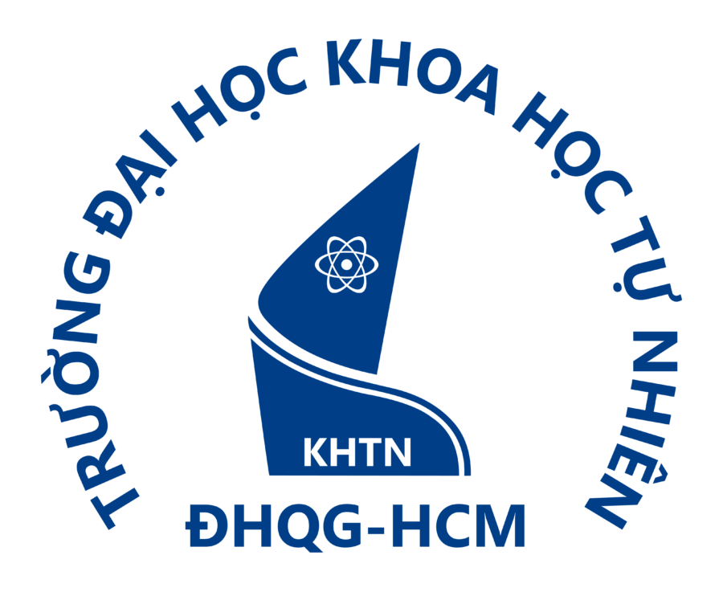

Ba tuần, một đề tài, tám người bạn mới. Trang này giúp bạn hiểu mình hơn, chia vai cho hợp, học và tìm tài liệu đúng cách, rồi tự tin đứng trước lớp.
6 buổi · 13/11 – 21/122 nhóm × 8 bạn20 đề tài gợi ýKhông cần biết trước về địa chấtBắt đầu khám phá bản thân (20 phút) Làm phiếu online (MSSV + mã lớp) Ôn tập ở nhà
Lần đầu dùng? Xem Hướng dẫn sử dụng.
Mỗi Thứ Sáu gặp Thầy một buổi: buổi 1 và buổi 6 học trực tiếp trên lớp (khoảng 90 phút, điểm danh QR), buổi 2–5 học online (khoảng 60 phút, link gửi trong nhóm Zalo). Mỗi tuần chỉ có một mốc chính, nộp bằng phiếu online trên trang làm phiếu (MSSV + mã vào lớp; ở nhà dùng mã ôn tập 6 ký tự để xem lại bài, điểm, nhận xét). Nộp đúng hạn quan trọng hơn làm hoàn hảo.
Khởi động, hiểu mình
Nộp Phiếu 1 (Thẻ khám phá bản thân) trước T3 17/11.
Họp nhóm lần đầu
Nộp Phiếu 2 (họp nhóm lần đầu) trước CN 22/11.
Nguồn tin và đề cương
Nộp Phiếu 3 (đề cương) trước CN 29/11; Thầy góp ý trước T4 2/12.
Góp ý giữa kỳ
Mang bản nháp nội dung chung của nhóm đến buổi.
Tập dượt lần 1
Nộp Phiếu 4 (tiến độ, slide nháp, tập dượt) trước CN 13/12.
Báo cáo seminar
Phiếu 5 làm trong buổi · Phiếu 6 và sản phẩm cuối trước T2 21/12, 23:59.
Bốn bước, khoảng 20 phút. Không có đáp án đúng sai, không tính điểm. Kết quả chỉ nằm trên máy của bạn, trang không gửi dữ liệu đi đâu. Cuối cùng bạn nhận một Thẻ giới thiệu: bấm Gửi Thẻ vào Phiếu 1 để điền sẵn vào phiếu online (vẫn phải tự bấm Nộp), hoặc bấm Sao chép Thẻ rồi dán vào Phiếu 1 để nộp, và đọc Thẻ trong buổi họp nhóm đầu tiên.
Ở mỗi phần, chọn đúng 7 câu giống bạn nhất ở thời điểm hiện tại. Đây là trò chơi khởi động dựa trên mô hình hình học tâm lý (Psycho-Geometrics) dùng trong học phần Kỹ năng làm việc nhóm và học tập, giúp nhóm bắt đầu trò chuyện về cách mỗi người làm việc.
Mỗi câu chọn từ 1 (hoàn toàn không giống tôi) đến 5 (rất giống tôi). Bộ câu hỏi rút gọn theo 6 nhóm sở thích nghề nghiệp của Holland (RIASEC).
Chọn 2 vai Thích, 1 vai Muốn học thêm và 1 vai Ngại. Nhóm tốt cần đủ 8 vai; một người có thể giữ 2 vai.
Kết quả là ảnh chụp ở thời điểm hiện tại, không phải nhãn dán. Sở thích, tính cách và kỹ năng của người 18 tuổi còn thay đổi nhiều; đại học là nơi để thay đổi. Nếu bạn thấy căng thẳng hay buồn kéo dài, hãy nói với Thầy hoặc tìm đến bộ phận tư vấn tâm lý – hỗ trợ sinh viên của Trường.
Ra về với 3 thứ: đề tài đã chọn, bảng phân vai và bản giao ước nhóm. Mỗi người nhận 1 vai chính + 1 vai học thêm; không ai bị xếp vào vai mình ghi là Ngại nếu còn người khác nhận được.
| Vai | Việc chính trong seminar | Hợp với người… |
|---|---|---|
| Điều phối | Chia việc, giữ bảng kế hoạch, nhắc hạn, chủ trì họp | quyết đoán, thích tổ chức |
| Khơi ý tưởng | Đề xuất góc nhìn, câu hỏi riêng của nhóm, ý tưởng mở bài | sáng tạo, nhiều ý tưởng |
| Săn tư liệu | Tìm bài báo, báo cáo, ảnh vệ tinh, số liệu; ghi nguồn | tò mò, kiên nhẫn |
| Kiểm chứng | Đối chiếu nguồn, soát số liệu, chuẩn bị câu hỏi phản biện | cẩn thận, hay hỏi "tại sao" |
| Kể chuyện bằng hình | Slide, sơ đồ, bản đồ, video ngắn | có mắt thẩm mỹ, thích thiết kế |
| Viết – biên tập | Đề cương, ghi chú cho người nói, thống nhất văn phong | viết gọn, ngăn nắp |
| Trình bày | Dẫn dắt bài nói, điều phối hỏi đáp | tự tin trước đám đông |
| Kết nối | Giữ không khí, hỏi han bạn im lặng, hòa giải | biết lắng nghe, hòa đồng |
Chọn lọc từ học phần Kỹ năng làm việc nhóm và học tập (KNLVN) của Trường, kèm cách dùng ngay cho bài seminar địa chất.
Gấp tài liệu lại, viết ra giấy tất cả những gì còn nhớ, rồi mở ra đối chiếu. Tự kiểm tra giữ kiến thức lâu hơn đọc lại.
Ôn lại sau 1 ngày, 3 ngày, 7 ngày. Không ôn, kiến thức rơi rất nhanh theo đường cong quên lãng.
Khảo sát → Đặt câu hỏi → Đọc → Thuật lại → Ôn tập. Lướt tiêu đề, hình, kết luận trước khi đọc kỹ.
Chia trang 3 phần: từ khóa – ghi chép chính – tóm tắt. Sơ đồ tư duy để thấy toàn cảnh.
Giải thích một khái niệm bằng lời đơn giản như đang dạy em lớp 8. Chỗ nào vấp là chỗ chưa hiểu.
Cụ thể, Đo được, Khả thi, Thực tế, Có thời hạn.
Quan trọng × Khẩn cấp: Làm ngay · Lên lịch · Ủy thác · Loại bỏ. Dành nhiều thời gian nhất cho ô "Quan trọng – chưa khẩn cấp".
25 phút làm một việc duy nhất, nghỉ 5 phút. Khóa khung giờ trên lịch cho từng việc.
20% việc cốt lõi tạo 80% kết quả; việc luôn giãn ra lấp đầy thời gian cho phép.
Trắng: dữ kiện · Đỏ: cảm xúc · Đen: rủi ro · Vàng: lợi ích · Xanh lá: ý tưởng mới · Xanh dương: điều phối. Cả nhóm cùng "đội" một mũ một lúc.
Hỏi liên tục: điều đó nghĩa là gì? bằng chứng ở đâu? nếu ngược lại thì sao? hệ quả là gì?
Cái gì, ở đâu, khi nào, tại sao, ai, như thế nào; xương cá để lần ra nguyên nhân gốc.
Currency (cập nhật) · Relevance (liên quan) · Authority (uy tín tác giả) · Accuracy (chính xác, có bằng chứng) · Purpose (mục đích, thiên kiến).
Stop: dừng lại · Investigate: ai đăng? · Find: tìm nguồn uy tín đối chiếu · Trace: truy về nguồn gốc của ảnh, trích dẫn.
"cụm từ chính xác", AND, OR, site:edu.vn, filetype:pdf; Google Scholar cho bài báo khoa học.
"land subsidence" "Ho Chi Minh City" filetype:pdfThank – cảm ơn người hỏi · Repeat – nhắc lại câu hỏi cho cả lớp nghe · Answer – trả lời trọng tâm · Control – giữ thời lượng, chuyển câu tiếp.
Độ khó là ước tính cho sinh viên năm nhất: ★ dễ tiếp cận, nhiều tài liệu tiếng Việt · ★★ cần đọc thêm kiến thức nền · ★★★ nhiều khái niệm chuyên sâu, tài liệu chủ yếu tiếng Anh. Làm xong phần Khám phá bản thân, các đề tài hợp với sở thích của bạn sẽ được đánh dấu.
| # | Đề tài | Khối | Độ khó | Gợi ý thu hẹp cho vừa sức |
|---|
Nhóm lần đầu làm seminar nên chọn đề tài ★ hoặc ★★. Chọn ★★★ khi nhóm có ít nhất 3 bạn đọc tiếng Anh ở mức 3 trở lên. Mỗi nhóm thêm ít nhất một câu hỏi của riêng mình vào đề cương, đó là phần làm bài seminar thú vị.
Điểm nhóm ghi nhận sự phối hợp; đánh giá chéo trong nhóm bảo đảm công bằng cho từng người, tránh cảnh một bạn gánh cả nhóm.
| STT | Việc | Người phụ trách | Hạn | Trạng thái | Link minh chứng |
|---|---|---|---|---|---|
| 1 | Đề cương 1 trang | Viết – biên tập + cả nhóm | Ngày 6 | Đã xong | Google Docs |
| 2 | Danh mục 8 nguồn đã qua CRAAP | Săn tư liệu, Kiểm chứng | Ngày 9 | Đang làm (5/8) | Google Sheets |
| 3 | Bản đồ, ảnh Google Earth khu vực nghiên cứu | Kể chuyện bằng hình | Ngày 11 | Chưa bắt đầu | Thư mục Drive |
| 4 | Tập dượt có bấm giờ | Cả nhóm | Ngày 14 | Dời sang ngày 15 (báo trước) | Biên bản họp |
Bảng này nộp ở Phiếu 4. Làm trên Google Docs, Sheets để có lịch sử chỉnh sửa; đó là minh chứng tự nhiên cho việc ai làm gì, khi nào.
Nộp ở Phiếu 6, chấm kín: chỉ giảng viên xem. Mỗi bạn tự chấm mình và chấm kín từng bạn cùng nhóm theo 4 tiêu chí, mỗi tiêu chí tối đa 2,5 điểm, tổng 10. Rút gọn từ phiếu đánh giá của học phần KNLVN cho seminar này.
| Tiêu chí | Mức 1 (0 – dưới 1,0) | Mức 2 (1,0 – dưới 2,0) | Mức 3 (2,0 – 2,5) |
|---|---|---|---|
| Tham dự & phối hợp | Vắng nhiều buổi họp, gần như không tương tác trên nhóm chat | Vắng 1 buổi, có tương tác nhưng ít đóng góp ý kiến | Dự đủ, tương tác đều, đóng góp ý kiến mỗi tuần |
| Quản lý công việc | Trễ hạn nhiều việc, không báo trước | Phần lớn đúng hạn, trễ 1 việc có báo trước | Đúng hạn hoặc sớm, còn hỗ trợ bạn khác |
| Giao tiếp | Thường trả lời sau hơn 24 giờ hoặc không trả lời | Trả lời trong ngày, đôi khi khó hiểu | Trả lời nhanh, rõ ràng, góp ý lịch sự |
| Giải quyết vấn đề | Không đề xuất giải pháp khi nhóm gặp khó | Có đề xuất, đôi khi chưa khả thi | Nhận ra vấn đề sớm, đề xuất giải pháp được nhóm dùng |
Kèm theo, mỗi bạn ghi 1 điều nên giữ (KEEP) và 1 điều nên đổi (CHANGE) cho từng bạn, cùng 3 câu tự nhìn lại: mình đã làm gì, học được gì, lần sau làm khác điều gì.
Tìm – đặt câu hỏi rõ (bối cảnh, yêu cầu, định dạng). Tách – lọc lỗi, thiên kiến, số liệu bịa. Tinh chỉnh – hỏi lại, đối chiếu nguồn gốc rồi mới dùng.
Ví dụ APA: Minderhoud, P. S. J., et al. (2017). Impacts of 25 years of groundwater extraction on subsidence in the Mekong delta, Vietnam. Environmental Research Letters, 12(6), 064006.